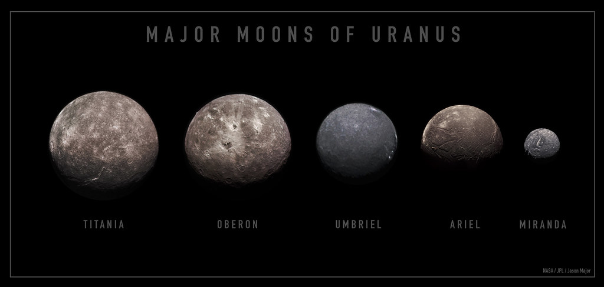

Uranus and the 5 Major Moons
Section header
Uranus
Uranus is the seventh planet from our sun. It has 5 main moons, with 28 moons total. Uranus is known for its unusual tilt, its light blue color, and having a silly name.
Miranda
One of the main 5 moons of Uranus. Miranda is the smallest and closest of the main 5 moons. It takes this moon just over one Earth day to orbit the planet.
Ariel
One of the main 5 moons of Uranus. It is the fourth largest moon orbiting the planet. Ariel is the most reflective moon orbiting the planet Uranus.
Umbriel
One of the main 5 moons of Uranus. This moon was discovered at the same time as Ariel and is the third largest moon. It's the darkest of Uranus’s moons.
Titania
One of the main 5 moons of Uranus. Titania is the largest moon out of 28 total moons orbiting Uranus. This moon is also made of ice and rock.
Oberon
One of the main 5 moons of Uranus. This is the planet’s second largest moon and 10th largest in the solar system. Oberon is Uranus’s outermost moon.